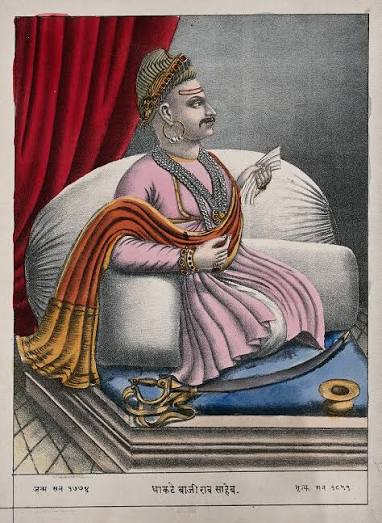

Bajirao I (born
Visaji,18 August 1700 – 28 April 1740 ) was the 7th Peshwa of the
Maratha Empire. Born in a Brahmin family as the son of Peshwa Balaji
Vishwanath, he began his military career at a young age.
After the death of Balaji, he was proclaimed Peshwa and over the new two
decades he led the Maratha army on an unprecedented campaign of expansion,
conquering Mughal territory up till Delhi and Cuttack.
He further
solidified Maratha authority in the Deccan by defeating the Nizam of
Hyderabad at Palkhed and liberated several kingdoms and vassals from
Mughal influence. Among them was the Bundela ruler Chhatrasal, whom
Bajirao rescued from a Mughal siege, gaining independence for Bundelkhand.
Subsequently, Chhatrasal granted Bajirao a jagir and his daughter
Mastani's hand in marriage.
Bajirao asserted Maratha tax rights in
Gujarat, defeating rebel Trimbak Rao Dabhade in 1731 at Dabhoi; he also
engaged in a diplomatic mission to persuade Rajput courts for chauth
payments. Further efforts to establish Maratha dominance saw him
responsible for the Battle of Delhi (1737) which may be said to mark the
pinnacle of his military career.
He secured the important territory of Malwa after defeating the
combined forces of Mughal-Nizam-Nawab of Awadh in Battle of Bhopal
(1737).
At the time of his death in 1740, the Maratha Empire had reached its
greatest territorial extent yet and was amongst the largest powers of the
subcontinent. Bajirao's adventurous life has been picturized in Indian
cinema and also featured in novels. Bajirao had two wives: Kashibai and
Mastani.
Bajirao's relationship with his second wife Mastani is a controversial
subject; very little is known with certainty about it. She was generally
referenced cryptically in books, letters or documents from that era.
# The Nizam.
# Bundelkhand.
# The Portuguese .
# Siddis.
# Rajputana